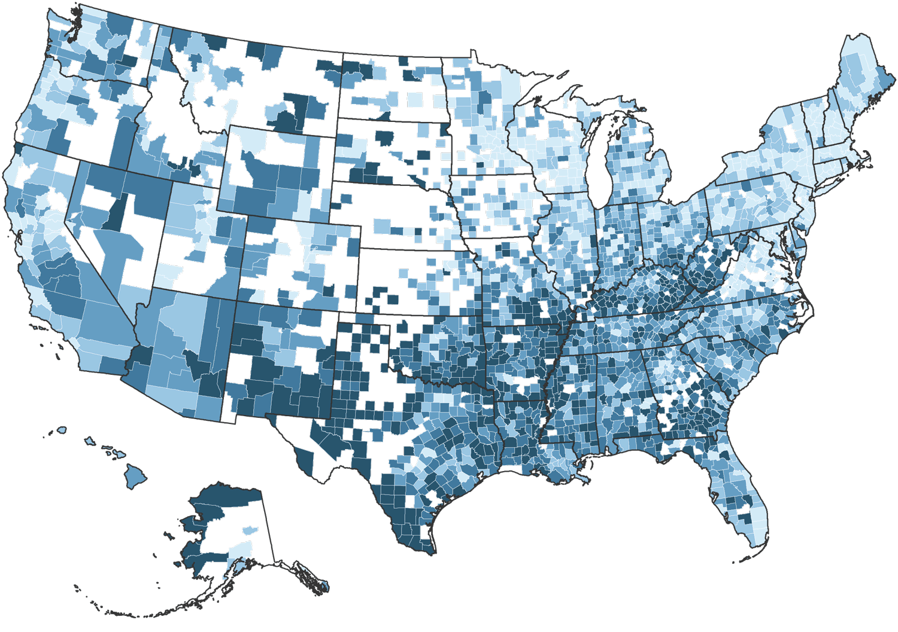

Overall Teen Birth Rates In The U.S. (2013-14)
Births per 1,000 females 15 to 19 years old, by county of residence
≥ 48.2 (first quintile)
37.5–48.1 (second quintile)
29.0–37.4 (third quintile)
20.8–28.9 (fourth quintile)
≤ 20.7 (fifth quintile)
Data not available
